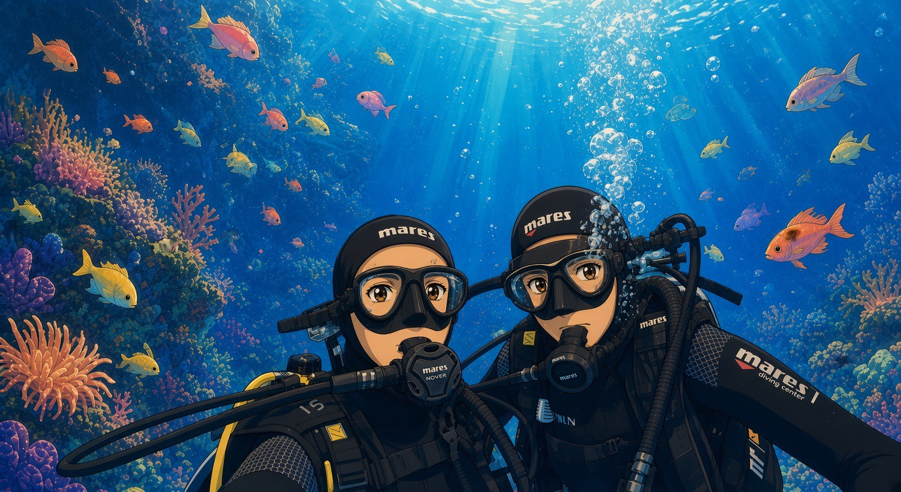

🐟 Guida e Archivio Specie
Clicca qui per aprire il catalogo completo di tutte le specie con scheda informativa e link diretti a Wikipedia!
Benvenuti a Bordo
Esplora la biodiversità marina del golfo, spunta le specie avvistate, carica foto e video ed annota le tue immersioni nel diario di bordo.